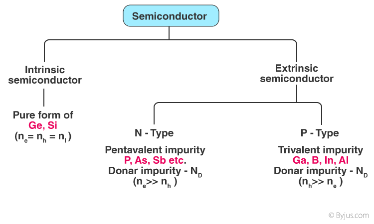

Types of Semiconductors
semiconductors can be classified as:
- Intrinsic semiconductor
- Extrinsic semiconductor

An intrinsic type of semiconductor material is made to be very pure chemically. It is made up of only a single type of element.The conductivity of semiconductors can be greatly improved by introducing a small number of suitable replacement atoms called IMPURITIES. The process of adding impurity atoms to the pure semiconductor is called DOPING. Usually, only 1 atom in 107 is replaced by a dopant atom in the doped semiconductor. An extrinsic semiconductor can be further classified into:
N-type Semiconductor
P-type Semiconductor
Let us now understand the uses of semiconductors in daily life. Semiconductors are used in almost all electronic devices. Without them, our life would be much different.
Their reliability, compactness, low cost and controlled conduction of electricity make them ideal to be used for various purposes in a wide range of components and devices. transistors, diodes, photosensors, microcontrollers, integrated chips and much more are made up of semiconductors.
Here we have discussed some advantages of semiconductors which makes them highly useful everywhere.
They are highly portable due to the smaller size
They require less input power
Semiconductor devices are shockproof
They have a longer lifespan
They are noise-free while operating